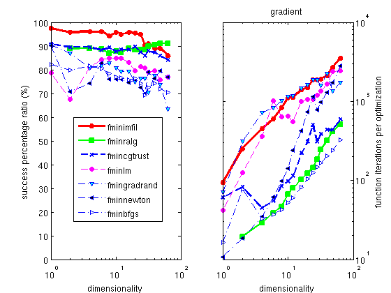

iFit: iOptim Optimization methods
- Description of the optimization process
and general syntax
- Recommended optimizers
- List of optimizer implemented in
iFit/iOptim
- Benchmarking Optimization methods
- Swarm and Genetic algorithms
- Gradient methods (Newton)
- Simplex methods
- Other optimizers
Commands we use in this page:
fminsearch, and many others
Description of the optimization process and
general syntax
The
iOptim sub-library
provides a set of
minimization
routines, that is computational methods which attempt to minimize an
objective function, often referred
as the
criteria, by varying
a set of parameters.
minimizer: { vary vector p so that objective(p) is minimal }
The syntax which all of these optimizers use is the one from the
default Matlab
fminsearch
function :
>> [parameters,criteria,message,output] = minimizer(objective, guess, options)
where the input
arguments are:
- objective: the name of
the function to minimize, objective(p).
This
can be a string or a function handle.
- guess: the starting
parameter set that objective depend on (this is a vector of numerical
values).
- options: a
configuration structure as obtained from optimset
The options structure may
contain the following members:
- options.Display: Level
of display [ off | iter | notify | final ]. Default is 'off'
- options.MaxFunEvals: Maximum number of
function evaluations allowed
- options.MaxIter: Maximum number of
iterations allowed
- options.TolFun: Termination tolerance on
the function value (absolute value or change)
- options.TolX: Termination tolerance on
parameter change
- options.OutputFcn: Name of an output
function. When set, it is called at each iteration step. You may use 'fminplot', which is
provided in iOptim.
- options.FunValCheck: Check for invalid
values, such as NaN or complex
The output
arguments from the minimizer are as follow:
- parameters: is the
parameter set which minimizes the objective function
- criteria: is the
criteria/objective value at the minimum solution
- message: is the final
optimization routine state
- output: is
a
structure
that holds some information gathered during the minimization procedure
The last output argument
has at least the following fields:
- output.algorithm: Algorithm
used
(char)
- output.message: Message
which details the final state of the optimizer (char)
- output.funcCount: Number of
function evaluations performed during the minimization (double)
- output.iterations: Number of
iterations performed during the minimization (double)
In all cases, the optimizer can handle constraints, specified
as
a 4th input argument. These are often lower and upper bounds. Refer
to the documentation of each minimizer for more information, and the
documentation about fitting models onto data
sets.
Recommended optimizers
The Table 1 below presents a
selection of the 'best' optimization methods. For each of them, we
indicate the typical success ratio, and solving time.
Optimizer
|
Description
|
Mean
Success
rate (%)
|
Mean
execution
time (s)
|
Constraints support
|
| fminimfil |
Unconstrained Implicit filtering
coupled with BFGS |
73.5 |
0.09 |
|
| fminralg |
Shor r-algorithm |
61.1 |
0.17 |
|
| fminpowell |
Powell Search |
56.5 |
0.06 |
|
| fminpso |
Particle Swarm Optimization |
58.5 |
0.85 |
yes
|
| fminhooke |
Hooke-Jeeves direct search |
73.2 |
1.87 |
|
| fminswarm |
Particule
Swarm Optimizer (alt. implementation)
|
40.0 |
0.18 |
yes
|
| fmincmaes |
Evolution Strategy with
Covariance Matrix Adaptation |
48.6 |
2.54 |
yes
|
| fminsimpsa |
simplex/simulated
annealing |
36.9 |
0.34 |
yes
|
fminswarmhybrid
|
Hybrid Particle Swarm Optimizer with fminimfil
|
|
|
|
Table
1:
A selection among the most efficient and fast optimization methods. The methods that handle constraints on
parameter are indicated in the last column.
All of these optimizers follow the same syntax as the default
Matlab fminsearch optimizer
(which is based upon the simplex method).
>> [parameters, fval, exitval, output] = fminimfil(function, starting_parameters, options, {constraints})
where the options and output arguments are structures.
Some of these methods support constraints on parameters during the
optimization process.
The iData fits
method is a wrapper to any of the iOptim
optimizers, with a specified fit criteria, and added constraints
handling, even for methods that do not support it natively.
List of optimizer
implemented in iFit/iOptim
We have performed extended tests of all the optimizers that are given
in the iOptim sub-library. For each optimizer, we have minimized a set
of functions, which include sharp, broad, noisy, with local minima,
etc... models.
- Each of the 52 model functions to minimize can be solved with up
to d=64 parameters.
- Each of the 21 optimizers has solved all the function, with d=1-64 parameters.
- Each of these tests has been repeated 10-50 times with a random
set of starting parameters.
This makes about 320000 optimizations... We then present a list of
these optimizers, with their mean solving efficiency and execution
time. This provides a quantitative measurement of optimizers, which
help in choosing good methods, and put aside bad ones. More detailed
results are shown in the plot above.
|
Name
|
Description
|
Overall efficiency
[%]
|
Mean execution time [s]
|
Comments
|
|
fminsimpsa
|
simplex/simulated
annealing
|
36.9
|
0.35
|
good for d<10, slow.
Supports parameter constraints.
|
|
fminmulti
|
Multidirectional search
|
35.0
|
10
|
gets very slow for large d. Supports parameter constraints.
|
|
fminsearchOS
|
Nelder-Mead simplex
|
32.3
|
0.11
|
|
|
fminsearch
|
Nelder-Mead simplex (Matlab)
|
29.8
|
0.18
|
|
|
fminimfil
|
Unconstrained Implicit
filtering coupled with BFGS
|
73.5
|
0.09
|
very fast, success > 75 % for d <= 24,
success
> 50% for d<= 64
|
|
fminralg
|
Shor r-algorithm
|
61.1
|
0.17
|
fast, success >60% for 2<=d<=32,
success >50% for d<=64
|
|
fminnewton
|
Steihaug Newton-CG-Trust
|
47.3
|
23.91
|
|
|
fmingradrand
|
Random Gradient
|
40.1
|
0.08
|
|
|
fminbfgs
|
Broyden-Fletcher-Goldfarb-Shanno
|
35.1
|
6.38
|
|
|
fminlm
|
Levenberg-Maquardt
|
2
|
n.a
|
very bad
|
|
fminpso
|
Particle Swarm
Optimization
|
58.5
|
0.85
|
best success ratio >90 % for d<=6. Supports parameter constraints.
|
|
fmincmaes
|
Evolution Strategy
with Covariance Matrix Adaptation
|
48.6
|
2.54
|
rather slow. Supports parameter constraints.
|
|
fminsce
|
Shuffled Complex Evolution
|
47.1
|
1.69
|
Supports parameter
constraints.
|
|
fminswarm
|
Particule Swarm Optimizer
|
40.0
|
0.18
|
Supports parameter
constraints.
|
|
fminga
|
Genetic Algorithm (real coding)
|
35.2
|
0.93
|
Supports parameter
constraints.
|
|
fminswarmhybrid
|
Hybrid Particule Swarm Optimizer
|
27.8
|
1.32
|
Supports parameter
constraints.
|
|
fminhooke
|
Hooke-Jeeves direct
search
|
73.2
|
1.87
|
very high success rate >65 % for d<=64
but gets very slow for large d
|
|
fminpowell
|
Powell Search
|
56.5
|
0.06
|
very fast, success >60 % for d>=8, success
>45%
for d<=64
|
|
fminrand
|
Adaptive Random Search
|
32
|
10
|
gets very slow for large d
|
|
fminanneal
|
Simulated Annealing
|
31.9
|
0.32
|
|
|
fminkalman
|
unscented Kalman filter optimizer
|
26.5
|
0.11
|
|
Table 2: Optimization
methods in iFit/iOptim, with mean success ratio in the
dimensionality range d=1-64. Bold values indicate recommended
algorithms. Default parameters from Matlab implementations are used,
and MaxFun=2500*d, MaxIter=250*d, TolFun=1e-4. Best
optimizers are highlighted in green.
Benchmarking Optimization methods
Most of the optimizers given with iOptim
have been gathered from the open-source community. In a few cases, the
same mathematical method has been implemented as a number of equivalent
methods, but with different overall efficiency. This means that there
is no unique way to code an optimization algorithm. We do not provide
any guaranty regarding the effectiveness of the optimizers, but we may
statistically compare them.
Swarm and Genetic
algorithms
 Figure 1: Mean efficiency and solving
time for swarm and genetic algorithm methods, as a function of the
number of parameters to optimize.
Figure 1: Mean efficiency and solving
time for swarm and genetic algorithm methods, as a function of the
number of parameters to optimize.
Gradient methods
(Newton)

Figure 2: Mean efficiency and solving
time for gradient methods, as a function of the
number of parameters to optimize.
The gradient methods (derived from the
Newton's method) are often considered to be the fastest. The well known
Marquardt-Levenberg is an implementation of an adaptive Newton's method
with a least square criteria (see below). This is true - they are fast
for a reduced number of model parameters.
However they often fail, as the method easily gets trapped into local
minima. They are notoriously inefficient with noisy data. The fminnewton optimizer still ensures
about 45% success rate for high dimensionalities, but the corresponding
solving time is simply unreasonable. An additional fminlm Maquardt-Levenberg method
exists (not shown on plots), but its implemetation efficiency is
extremely poor. This may be fixed in future releases.
Among these methods, we provide two improved optimizers fminimfil and fminralg which
are both fast and ensure a success ratio higher than 50 % for all type
of models, including noisy ones. The latter is both slightly less
efficient, and slower.
Simplex methods
 Figure 3: Mean efficiency and solving
time for simplex methods, as a function of the
number of parameters to optimize.
Figure 3: Mean efficiency and solving
time for simplex methods, as a function of the
number of parameters to optimize.
The default optimizer shipped with
Matlab is the
fminsearch one,
which
is a pure simplex implementation. It can solce problems with up to 7
parameters, with at least 50 % success. It is slower than the
fminimfil and
fminralg, but faster than the
fminpso and
fmincmaes.
A better alternative is a mix of a simplex with a simulated annealing
process, implemented as
fminsimpsa. It
can solve problems with up to 10 parameters.
Other optimizers
 Figure 4: Mean efficiency and solving
time for other non-conventional methods, as a function of the
number of parameters to optimize.
Figure 4: Mean efficiency and solving
time for other non-conventional methods, as a function of the
number of parameters to optimize.
The Powell optimizer fminpowell is a
well known, simple and efficient method. It ensures at least 50 %
success for most problems up to 20 parameters, and is also among the
fastest. The Hooke optimizer fminhooke is one
of the most efficient methods for all problem dimensionalities.
Unfortunately, it becomes as slow as the swarms when the number of
parameters increases.
E.
Farhi - iFit/optimization methods - $Date: 2010-12-02 14:59:32 $ $Revision:
1.2 $ - back to
Main iFit Page
{kind=link}